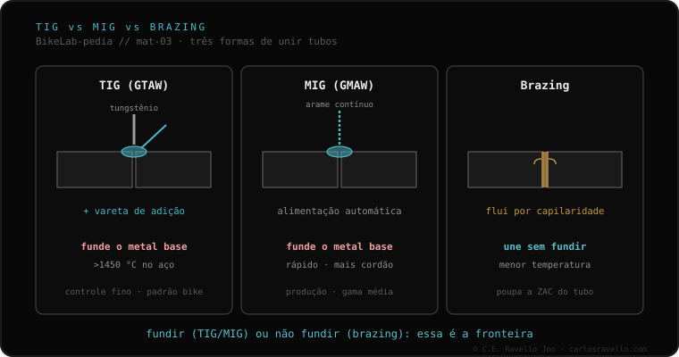

Há três formas de unir os tubos de um quadro. O TIG funde os próprios tubos para uni-los por fusão (no aço, acima de ~1450 °C). O MIG faz o mesmo, mas com arame de alimentação contínua: mais rápido, usado em produção em série de alumínio. A brasagem é diferente: une com um metal de adição de bronze ou prata que funde a uma temperatura menor, sem fundir o tubo —altera menos a estrutura e deixa uma transição mais lisa, mas pesa um pouco mais e é mais lenta e cara—. A fronteira real: fundir o tubo, ou uni-lo sem fundir.
Antes de falar de metal de adição ou de ligas, vale a pena ter claro o que cada técnica faz com o tubo. Essa decisão começa pelo material do quadro.
O TIG (em inglês GTAW) usa um eletrodo de tungstênio que não se consome e, normalmente, uma vareta de adição que o operador alimenta à mão. O calor funde o próprio metal base dos dois tubos, que se unem em um único cordão. No aço isso ocorre acima de cerca de 1450 °C. É o método de controle mais fino e o padrão na bicicleta.
O MIG (GMAW) parte da mesma ideia —fundir o metal base— mas alimenta o metal de adição de forma automática, com arame contínuo. É mais rápido e deixa mais material; por isso aparece sobretudo em produção em série, em especial de quadros de alumínio. Ganha em velocidade o que cede em controle frente ao TIG.
A brasagem muda a lógica. Aqui o tubo não funde: o que funde é um metal de adição —de bronze ou de prata— que funde a uma temperatura menor que o metal base e flui por capilaridade para unir as peças. Como o tubo não chega a fundir, sua estrutura se altera menos e a transição fica mais lisa. Em troca, pesa um pouco mais, é mais lenta e mais cara. É a diferença que reparte quase tudo: fundir o tubo (TIG/MIG) frente a não fundir (brasagem).

Nem toda técnica serve para tudo. O aço é o mais versátil: admite TIG, brasagem ou lug. O alumínio é soldado com TIG —ou com MIG na fábrica—. O titânio é soldado com TIG, mas com purga de argônio. E o carbono simplesmente não se solda: é um material que não funde para ser unido de novo como um metal. Por isso a técnica não se escolhe a gosto: o material a define.
A técnica é só metade da história: a outra metade é o que ela faz com o material. O que acontece ao redor do cordão é explicado pela zona afetada pelo calor; e quando se solda alumínio com TIG ou MIG, a escolha do metal de adição 4043 vs 5356 entra em jogo. Se o seu quadro é de alumínio, você saberá também por que importa a liga.
Se você não sabe com que método o seu quadro foi unido ou qual corresponde ao seu material, mande o caso. Diagnóstico real, sem te vender nada. Fale conosco no WhatsApp
O TIG funde os próprios tubos para uni-los por fusão (no aço, acima de cerca de 1450 °C). A brasagem os une com um metal de adição de bronze ou prata que funde a uma temperatura menor, sem fundir o tubo: altera menos a estrutura e deixa uma transição mais lisa, mas pesa um pouco mais e é mais lenta e cara.
O MIG é alimentação contínua de arame: mais rápido que o TIG e muito usado na produção em série de quadros de alumínio. Funde o metal base, como o TIG, mas com alimentação automática do metal de adição.
O aço admite TIG, brasagem ou lug. O alumínio é soldado com TIG, ou com MIG na fábrica. O titânio é soldado com TIG e purga de argônio. O carbono não se solda: não funde para ser unido de novo.